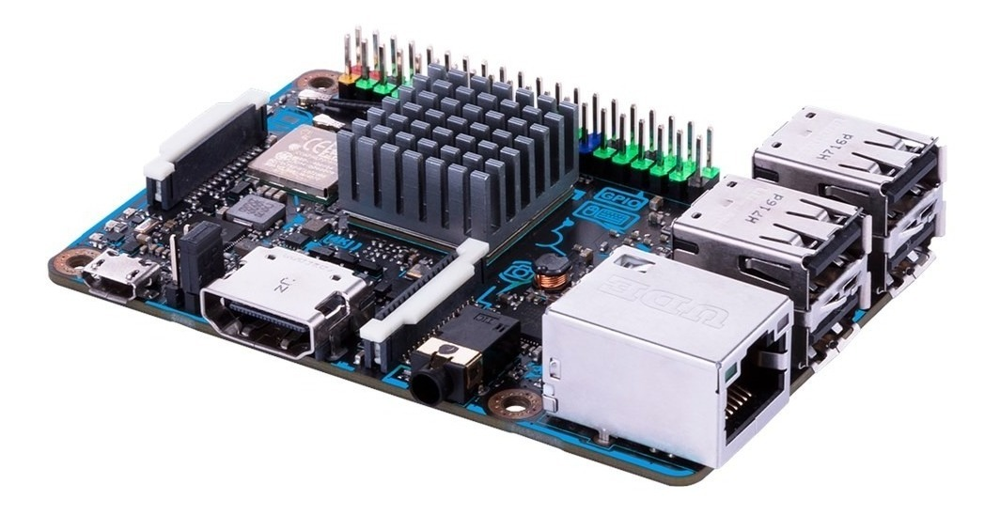
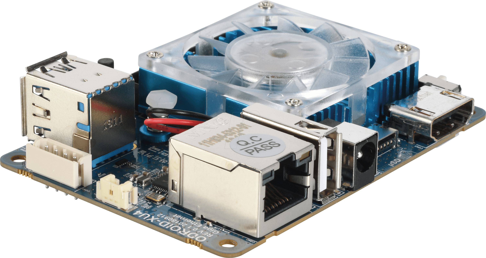

Modelos diferentes e populares de SBCs
Além da Raspberry Pi, existem vários outros fabricantes que utilizam modelos similares ou estilos próprios de placas, abaixo segue uma lista de algumas placas populares para projetos.
Asus Tinker Board

A Tinker Board é uma placa de design semelhante ao da Raspberry Pi,
mas com suas próprias diferenças,
como a memória RAM localizada na parte inferior em dois módulos separados,
icones na parte superior para indicação de elementos, e, em certos modelos,
memória interna eMMC Flash que pode ser alternada para o cartão SD.
[Link]
ODROID-XU4

O ODROID-XU4 é uma placa poderosa e compacta que se tornou popular pelo seu processador Samsung
Exynos de oito núcleos,
conectores USB 3.0 e possibilidade de módulo eMMC para memória mais rápida.
Bastante popular principalmente pelo seu desempenho em jogos, mas é necessário o uso de dissipador e ventoinha para manter a sua temperatura baixa
e assim manter o desempenho.
[Link]
LattePanda
LattePanda é uma placa que se destaca por possuir um processador Intel Atom,
processador de arquitetura x86, e por isso é capaz de utilizar o Windows 10 como SO,
que para muitos usuarios de SBC se torna mais simples para trabalhar
em projetos devido a programas com maior compatibilidade com o SO (Visual Studio Code, por exemplo)
ou projetos que requerem instruções mais avançadas, mas requer uma quantidade maior de energia para funcionar
e em modelos com processadores mais poderosos requerem sistemas de resfriamento como dissipadores e ventoinhas.
[Link]